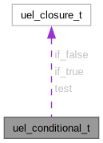

uel_conditional_t Struct Reference
Conditionals are constructs that provide functional flow control. More...
Collaboration diagram for uel_conditional_t:

Data Fields | |
| uel_closure_t | test |
| A closure that, based on its input, should return true or false. | |
| uel_closure_t | if_true |
| The closure that will be invoked if the test closure returns true. | |
| uel_closure_t | if_false |
| The closure that will be invoked if the test closure returns false. | |
Detailed Description
Conditionals are constructs that provide functional flow control.
A conditional is defined by a tuple <test, if_true, if_false> of closures. When applied to some input, this input is passed to the test closure. Based on its returned value, one of the other closures is invoked.
The documentation for this struct was generated from the following file:
- include/uevloop/utils/conditional.h
Generated by